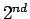

Next: Contents
Contents
Index
ชุดเอกสารคำสอน
วิศวกรรมคอมพิวเตอร์
| |
เอกสารคำสอน 11-3404 |
| |
โครงสร้างการทำงานของคอมพิวเตอร์ |
| |
และภาษาแอสแซมบลี |
| |
(Computer Organization and Assembly Language) |
| |
Version 1.0 |
| | ผศ. ดร. วรา วราวิทย์ |
| |
ภาควิชาวิศวกรรมไฟฟ้า
คณะวิศวกรรมศาสตร์ |
| |
สถาบันเทคโนโลยีพระจอมเกล้าพระนครเหนือ
|
Course Syllabus
11-3304 Computer Organization and Assembly Language
 Semester 2004
Instructor: Vara Varavithya
Office: Department of Electrical Engineering
Tel: 913-2500 Ext. 8120, Fax. 585-6149
E-Mail: vara@kmitnb.ac.th
Course Outline:
- Introduction to Computer Organization
- MIPS Assembly Language: Instruction Set Architecture,
Instruction Format.
- MIPS Assembly Language: Function Call and Register Management in Assembly Language.
- Arithmetic Logic Unit: Computer Arithmetic, Computer Hardware for Arithmetic, Design of ALU, Multipliers.
- Floating Point Calculation, IEEE 754 Standard.
- Datapath and Control: Single Cycle Datapath.
- Datapath and Control: Multicycle Datapath.
- Performance of Computer Systems: Speed up factor and Benchmarks
- Processor Pipeline: Pipeline Processor, Control of Pipeline, and
Data Hazard.
- Processor Pipeline: Hazard Resolution by data forwarding and Branch Hazard.
- Memory System: Memory Hierarchy, Caches, Performance of the
Caches
- Memory System: Virtual Memory.
- Input/Output Interface and Secondary Storage: I/O Performance,
Characteristic of I/O Devices, Bus, Interfacing I/O Devices to the Memory,
Processor, and Operating System.
- Redundant Array of Inexpensive Disks (RAID 0-6)
Reference Text:
- Computer Organization and Design, The Hardware/Software
Interface, D. A. Patterson and J. L. Hennessy,
Elsevier, Third Edition, ISBN 1-55860-604-1, 2005
Related Texts:
- James M. Feldman and Charles T. Retter, Computer Architecture: A Designer's Text Based on a Generic RISC, McGraw-Hill, 1994.
- John P. Hayes, Computer Architecture and Organization, 3rd edition, WCB/McGraw-Hill, 1998.
- Arthur B. Maccabe, Computer Systems: Architecture, Organization, and Programming, Irwin, 1993.
- M. Morris Mano, Computer Systems Architecture, 3rd edition, Prentice-Hall, 1993.
- William Stallings, Computer Organization and Architecture, 5th edition, Prentice-Hall, 2000.
- Andrew S. Tannenbaum, Structured Computer Organization, 4th edition, Prentice-Hall, 1999.
- IEEE Standard for Binary Floating Pint Arithmetic, IEEE, 1985.
Grading:
| Homework |
10% |
Midterm |
30% |
Final Exam |
60% |
Total |
100% |
|
|
Policies:
Collaboration
You are free to work with others in interpreting assignments and on developing
facility with the software tools we will be using. However, the solutions to
the assignments and exams have to be solely your own. Wherever appropriate,
you will be informed if you may work in groups. If you choose to do so, you
will need to add a write up explaining the exact role that each person played
in the design and execution of the solution. This sheet should be signed by
all persons involved.
Cheating
Cheating is a very serious offense. It will be dealt with in the most severe
manner allowable under University regulations. If caught cheating, you can
expect a failing grade and initiation of a cheating case in the University
system.
Next: Contents
Contents
Index
Vara Varavithya
2005-08-18